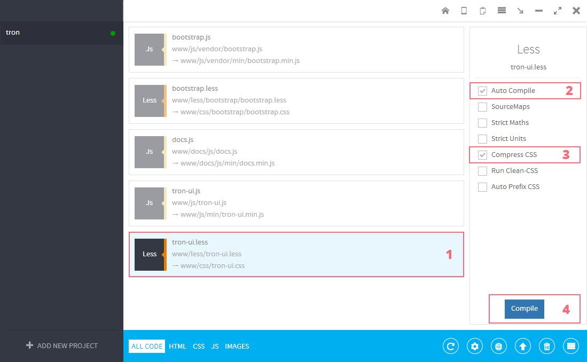

Tron is a new modern look of old good Bootstrap. Besides fully restyled default Bootstrap functionality, Tron includes lots of extra components to help you building modern responsive websites and applications.
| File Path | Description |
|---|---|
| main | Root folder |
| main/Tron PSD UI Kit | Folder includes all premium .psd files. For more details look at Photoshop Files section. |
| main/Tron Bootstrap UI Kit | This folder includes all HTML, CSS, Javascript, Fonts and Image files of the kit. |
| main/Tron Bootstrap UI Kit/less | Folder with source .less files |
| main/Tron Bootstrap UI Kit/css | Folder includes compiled from .less full and minified version of tron-ui.css as well as separate demo.css |
| main/Tron Bootstrap UI Kit/js | All source JavaScript files |
| main/Tron Bootstrap UI Kit/img | Folder includes all images and other graphic assets. |
| main/Tron Bootstrap UI Kit/fonts | This folder includes Flaticon Material Design Pack and Font Awsome generated Fonts. They are iconic fonts, that gives you customizable vector icons (more than 900 icons in total). For more information on how it works, please visit: Font Awsome Official Website and Flaticon Material Design Pack |
| main/Tron Bootstrap UI Kit/docs | Includes detailed Bootstrap like documentation with examples and code snippets. |
| main/Tron Bootstrap UI Kit/examples | Pre-built templates to use as starting point for your next project. |
| main/Tron Bootstrap UI Kit/color-2 main/Tron Bootstrap UI Kit/color-3 main/Tron Bootstrap UI Kit/color-4 main/Tron Bootstrap UI Kit/color-5 |
Folders includes predefined color schemes. |
| main/Tron Bootstrap UI Kit/outdatedbrowser | Plugin that detects old IE (<IE9) and inform useers that they have outdated browser and link to update it. |
Tron's CSS is built with Less. Less is a CSS pre-processor, meaning that it extends the CSS language, adding features that allow variables, mixins, functions and many other techniques that allow you to make CSS that is more maintainable, themable and extendable.
For more information visit LESS official website.
For compiling LESS file into CSS we used software called "Prepros". Visit it's website at http://alphapixels.com/prepros/. Basic version is completely free and available for Mac and Windows.
Tron already includes 5 predefined color schemes to choose from. But if you want to create your own colors it is very easy to do using Less.
Follow these easy steps:
Tron includes detailed Bootstrap like documentation with examples of usage and code snippets that can be asily copied and pasted.
You can find this documentation in your copy of Tron Kit main/Tron Bootstrap UI kit/docs. Launch index.html and use navigation bar to switch between sections. The same documentation available onlie http://the8guild.com/ui-kits/tron/docs/index.html
Tron Bootstrap UI Kit is based on premium PSD Kit. All Photoshop files you will find in the Tron PSD UI Kit folder.
There are 2 versions and separate files:
Device Placeholders.psd - Layered psd file with devices mockups;
Tron colors.psd - Layered psd file Tron predefined color schemes;
Version 1:
Version 2:
While making this UI Kit we used third party plugins, images, icons, fonts, etc... and want to thank their creators:
All the third-party plugins used in this template are free for personal and commercial use.